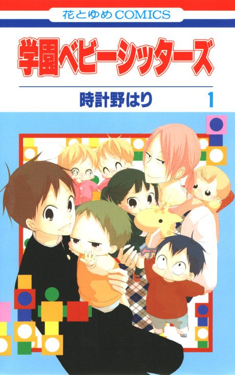

School Babysitters
学園ベビーシッターズ
After the anime, read the manga from Chapter 35.
7.9AniList score
—Animeter, no votes yet
12episodes
Anime finished. Where does the manga pick up?
Start at Chapter35
The anime ends at chapter 34 (skipping some chapters); start at chapter 35 in volume 7.
134ongoing
School BabysittersStart reading here